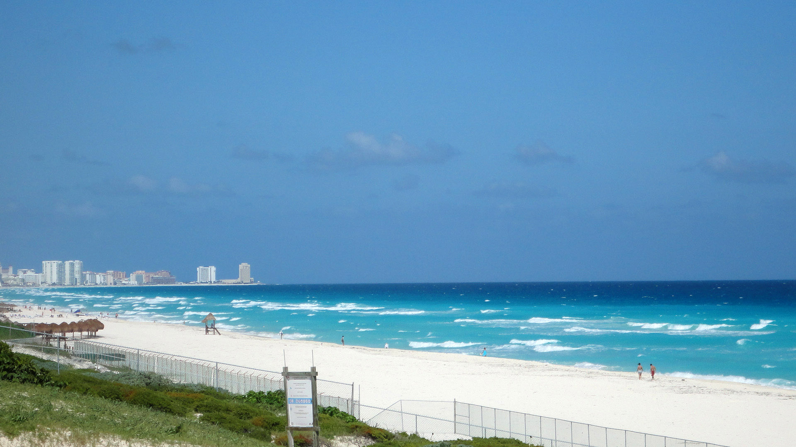
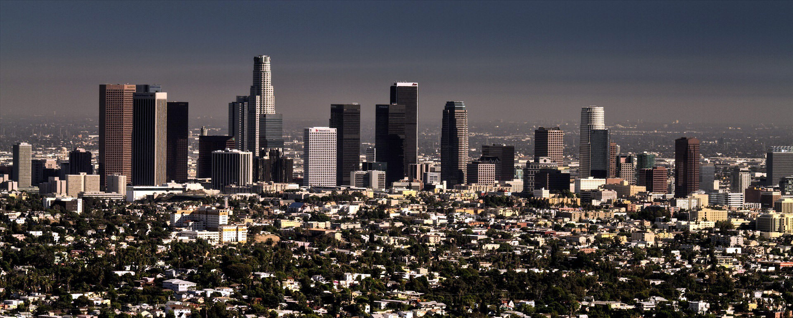
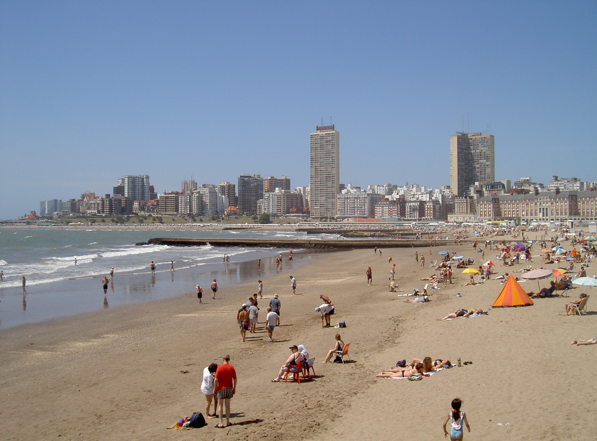

Ibiza

Ibiza is a Spanish island known for its Mediterranean beaches, clear water and nightlife. It is part of the Balearic Islands and is also known for its peaceful villages and natural landscapes.
Important Facts
- Province/State: Balearic Islands
- Country: Spain
- Population: 53,717
- Latitude and longitude: 38.9067 N, 1.4206 E
-
Country flag:

Cancun

Cancun is a coastal city in Mexico known for its Caribbean beaches, turquoise water, hotels and resorts. It is one of the most popular tourist destinations in Mexico.
Important Facts
- Province/State: Quintana Roo
- Country: Mexico
- Population: 934,189
- Latitude and longitude: 21.1619 N, 86.8515 W
-
Country flag:

Los Angeles

Los Angeles is a large city in California known for Hollywood, entertainment, cultural diversity and beaches. It is an important center for cinema, television and music.
Important Facts
- Province/State: California
- Country: United States
- Population: Approximately 3,878,704
- Latitude and longitude: 34.0522 N, 118.2437 W
-
Country flag:

Rio de Janeiro

Rio de Janeiro is a Brazilian city famous for its beaches, Carnival, soccer and Christ the Redeemer. Its mountains and coastline make it one of the most recognizable cities in the world.
Important Facts
- Province/State: Rio de Janeiro
- Country: Brazil
- Population: Approximately 6,730,729
- Latitude and longitude: 22.9068 S, 43.1729 W
-
Country flag:

Mar del Plata

Mar del Plata is an Argentine coastal city known for its Atlantic beaches, tourism and summer activities. It is one of Argentina's most important vacation destinations.
Important Facts
- Province/State: Buenos Aires Province
- Country: Argentina
- Population: 682,605
- Latitude and longitude: 38.0055 S, 57.5426 W
-
Country flag: